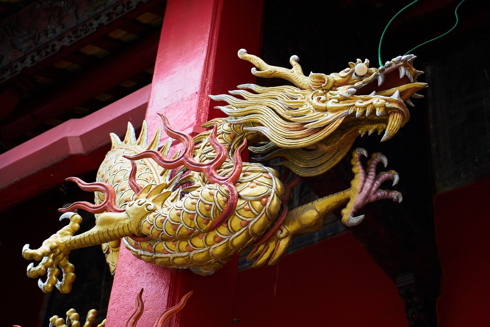

岳飛與秦檜
淨空法師
「素患難行乎患難，素夷狄行乎夷狄」，這是高度的智慧，真實的覺悟才能做到。這種事情，每一個時代、地區都有發生，真正是好人，為國家、為社會、為人民盡忠職守，但是有些人嫉妒、障礙，造謠生事破壞他。
在古代遭到陷害，不但地位失去了，還遭到了懲罰，朝廷把他流放到邊遠的地區。有些人很有學問、道德，他們對於皇帝誤聽別人的讒言，並不怪帝王，也不怪那些造謠生事陷害自己的人，他為什麼不怪？命該如此。
所以，他能作還債想，他為什麼不陷害別人，陷害我，一定我過去生中跟他有過節，我以前陷害過他，今天他抓到機會來報復，這個帳就消了。所以，他很安心、很歡喜接受懲罰、貶抑，這是真正有學問、有道德。
更嚴重的是遭到重大的刑罰，譬如歷史上眾所周知的宋朝岳飛，盡忠報國，不幸為秦檜所讒，這是被害了。過去不但有斬首分屍，甚至於滅九族，這些人也都是有道德、有學問，但他們都沒有絲毫怨恨之心。
這個覺悟比前面更深廣，不怨恨這些陷害自己的人，也不怨恨帝王，而自己認為是應有所得。何以說應該遭此報應？他懂得前世造因，因果通三世的道理，所以，心平氣和安心來接受處罰。這樣的人，後人明白之後，無人不尊敬，連天地鬼神都尊敬，他決定有無窮的福報。
所以，岳飛當年雖然被冤枉、被害了，可是岳飛之名，岳飛的精神，永遠活在我們民族每個人的心理，千年萬世哪一個人對他不尊敬？這是他的福報。乃至於他後世的子孫，一般人都會另眼相看，可見得禍與福很難說，當時看起來是禍，往後一看，禍就變成福了。
當時秦檜看起來是有福，做了宰相，安安穩穩過著大富大貴的生活，可是往遠處一看，那是禍害，正所謂是「福兮禍所倚」。反之，禍害也是「福之所倚」。所以，禍福很難講，都在當人一念之間，一念心平氣和，沒有絲毫怨恨，禍就轉變成福。由此可知，如果有一念不平之心，有一念憤慨之心，福也變成禍，這是不能不知的。